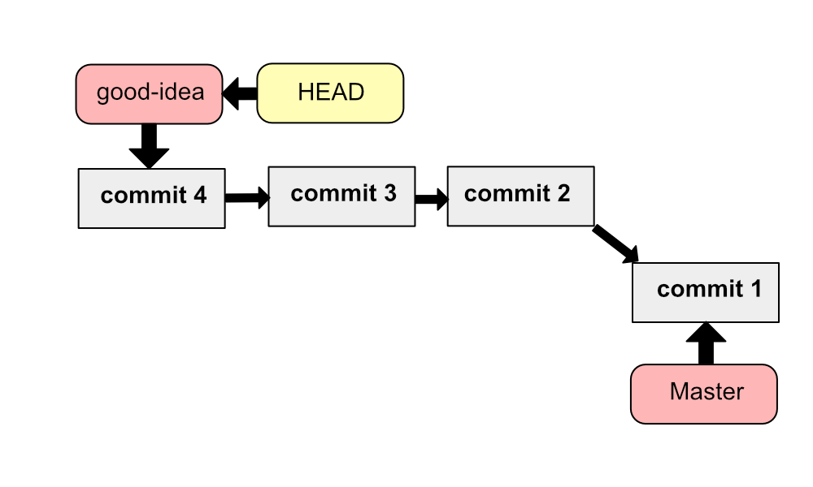
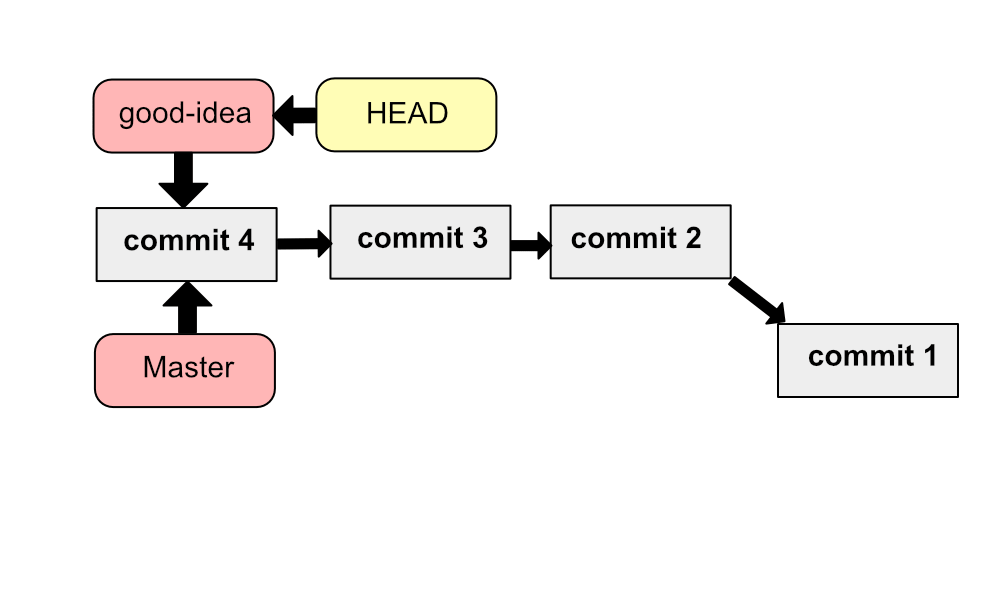
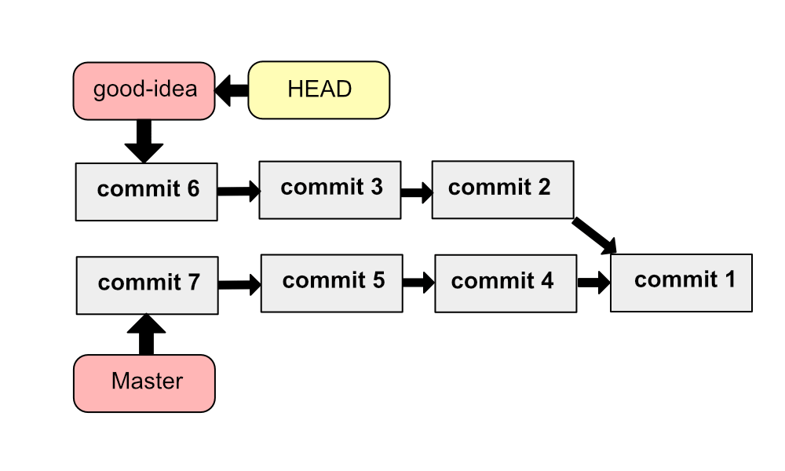
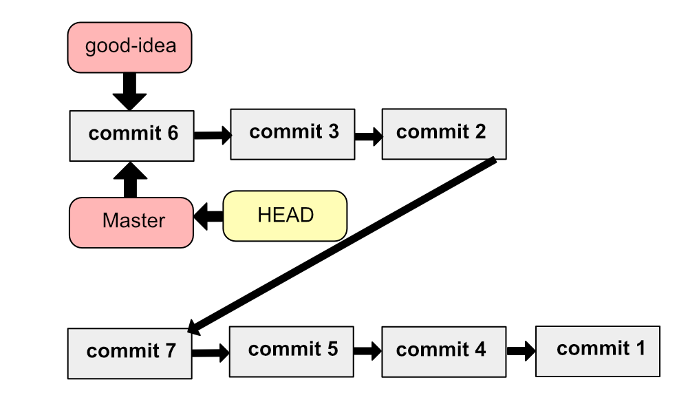
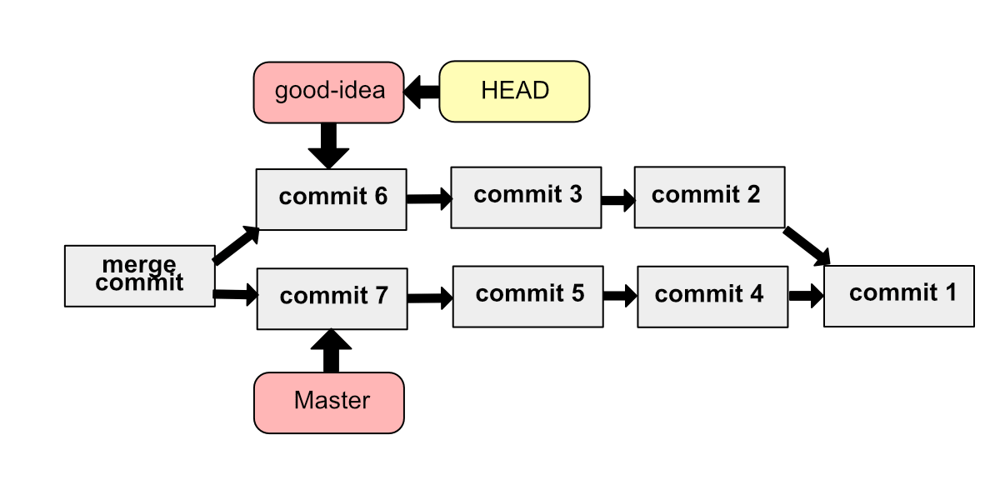
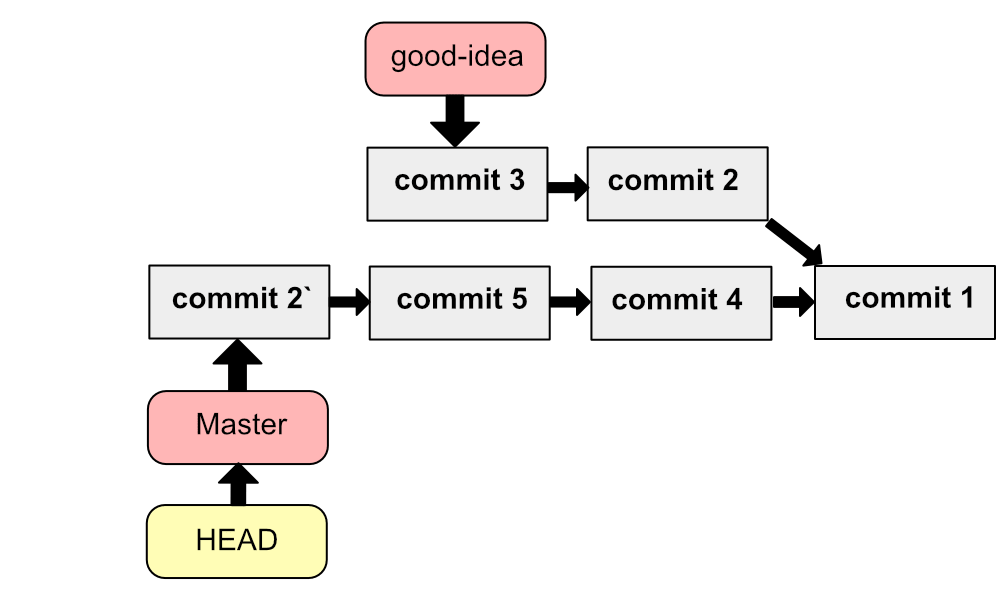

merge: 브랜치 합치기
두 서로 다른 브랜치를 하나로 합치는 명령입니다.
여러분은 굉장히 좋은 아이디어가 떠올라 good-idea라는 브랜치를 만들었고, 훌륭한 코드가 적용된 commit들이 여럿 생겼습니다. 이제 이 아이디어를 master 브랜치에도 적용해주고 싶습니다. 그럴 때 master 브랜치에 good-idea의 commit들을 붙이는 명령입니다.
Fast-forward 병합

만약 현재 브랜치의 상황이 이렇다면 크게 문제 될 것 없습니다. master 브랜치가 good-idea의 가장 최신 commit을 가리키게 하면 됩니다.
 위 그림처럼 단순히 branch가 가리키는 commit만 바꿔주어 병합을 진행하는 방식을 Fast-forward 병합 또는 빨리 감기 병합이라고 합니다.
기본적으론 이 Fast-forward 방식으로 병합을 진행합니다.
Rebase를 통한 Fast-forward 병합
그런데 브랜치를 오가면서 작업을 하다 보니 그만 다음과 같은 상황이 됐다고 가정합시다.

이 경우 단순히 가리키는 commit을 바꿔주는 것으론 병합이 불가능합니다. 이 경우 2가지 선택지가 있습니다.
- rebase를 통한 Fast-forward 병합
- 완전 병합
rebase를 통한 Fast-forward 병합은 commit의 부모 commit을 변경하는 것으로 fast-forward 병합이 이루어질 수 있는 상황을 만들어주는 겁니다. rebase가 뭔지 모른다면 모르고 넘기시고, 다음 글을 참고하시면 됩니다.
 good-idea 브랜치의 분기 commit을 commit1에서 commit7으로 바꿔주는 과정 즉, rebase 과정을 진행하여 Fast-forward할 수 있는 상황을 만들어주고, Fast-forward 병합을 진행합니다.
완전 병합
완전 병합의 경우 단순히 브랜치가 가리키는 commit만 바꾸는 것이 아니라 병합 commit이라는 commit이 새로 생깁니다. 또한 이 병합 commit은 2개의 부모 commit을 가지게 됩니다. 진정한 의미의 병합이라고 볼 수 있는 거죠. 완전병합을 하면 병합되었더라도 두 브랜치의 commit들이 다른 라인으로 공존하기 때문에 병합을 해제하거나 commit들을 관리하기에 더 편한 점이 있습니다.
Fast-forward 병합을 진행하지 못하는 경우 완전 병합으로 병합이 이루어지지만, Fast-forward를 할 수 있는 경우에도 --no-ff 옵션을 주어 완전 병합이 이루어지도록 할 수 있습니다.

그래프로 병합 보기
|
|
위 명령으로 commit들의 병합이 어떻게 이루어졌는지 시각적으로 확인할 수 있습니다.
병합 충돌
위와 같은 코드를 보면 병합 충돌이 일어난 것입니다.
충돌이 일어나면 병합을 멈추고 HEAD도 처음 보는 branch를 가리킵니다.
|
|
병합 중에 두 커밋의 내용이 충돌하는 경우는 아주아주아주 자주 일어납니다.
예를 들어봅시다. commit2에서 a 파일의 10번 줄은 ‘a = 10’ 인 데 commit5에서 a 파일의 10번 줄은 ‘a = 20’이라고 써진 경우 git은 어느 게 맞는 내용인지 헷갈린다며 사용자에게 선택지를 줍니다.
- 현재 브랜치의 변경 사항(a = 20)만 남길래?
- 병합 브랜치의 변경 사항(a = 10)만 남길래?
- 아니면 둘 다 남길래?
vscode는 친절하게 클릭해서 선택할 수 있게 해주지만 CLI를 쓰는 불우한 유저는 파일을 열고 위 <<<<<<,======,>>>>>> 지워줘야합니다. 또는 git mergetool을 사용해 병합을 이어가야하는데, mergetool은 따로 다루지는 않겠습니다. 한번 써보세요.
충돌 나는 내용을 해결해주면 저장하고 commit으로 만들어줘야합니다. commit을 만들게 되면 즉시 git은 병합을 마무리 짓고 다시 HEAD를 master 브랜치로 돌려놓습니다.
--squash:commit을 하나로 합치는 옵션
master브랜치에서 good-idea 브랜치를 merge 할 때 --squash 옵션을 주면 good-idea의 commit들을 하나로 합쳐 새로운 commit으로 만듭니다.
위 명령을 잘 이행해도 병합 과정이 끝난 것은 아닙니다. 충돌이 일어난다면 충돌을 해결해줘야 하고, 또한 commit들을 하나로 합쳐 다시 staged 상태로 사용자의 commit 명령을 대기합니다. 사용자가 커밋 메시지를 달아주며 commit 해줘야 비로소 병합이 끝납니다.
주의
--squash 옵션은 한 브랜치의 작업 내용을 하나로 뭉쳐서 master 브랜치에 병합시켜버리기 때문에, 이런 작업은 되돌릴 수 없습니다. 필요 없이 commit이 여럿으로 쪼개졌던 경우라던가
아주아주 간단한 작업에 한해서 이 옵션을 써주는 것이 좋습니다.
--abort: 병합 중단하기
병합하던 도중 뭔가 아차! 싶어지며 병합을 취소하고 싶어지면 --abort 옵션을 쓸 수 있습니다.
|
|
위 명령은 단순히 merge 하기 전으로 되돌립니다.
cherry-pick: 일부 commit만 병합하기
브랜치 전체를 병합하는 게 아니라 일부 commit들만 따와서 병합하고자 한다면 cherry-pick 명령을 써볼 수 있습니다.
위 명령은 현재 브랜치에 다른 브랜치의 commit 하나를 가져와 붙입니다. 정확히는 복사해옵니다. 따라서 복사해온 commit엔 다른 hash 값이 붙게 됩니다.

마치며
다음 글에선 작업을 취소하는 명령어 reset, rebase 에 대해 알아보겠습니다.